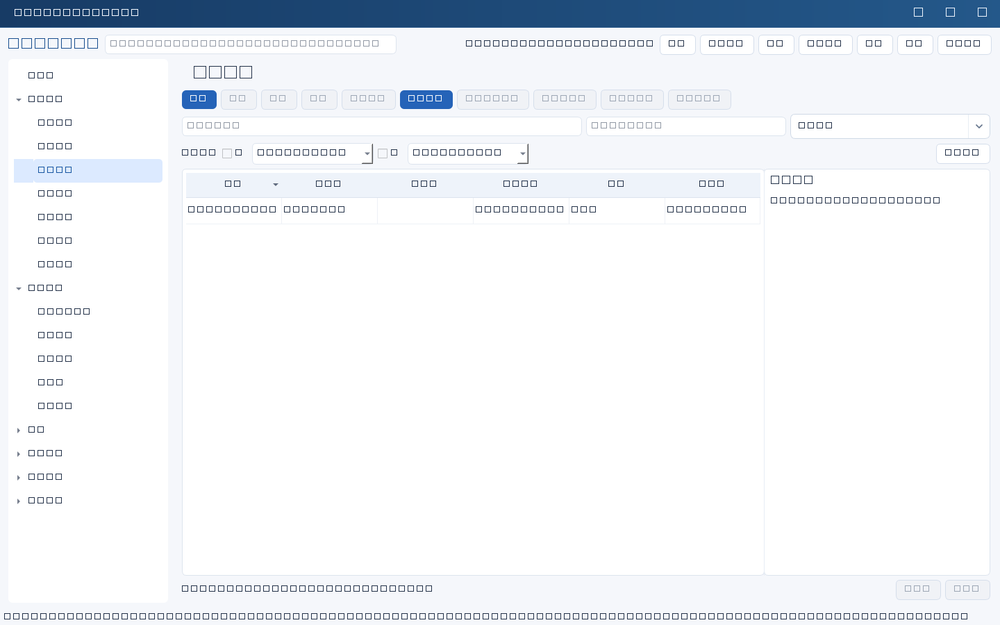

批量操作面向“同一模块的多条记录”，先按住 Ctrl / Shift 在列表中多选，再点“批量操作…”。所有批量写入由服务端在一个事务内完成：任一条版本冲突，整批都不写入，不会出现一半成功。
四种批量动作
| 动作 | 说明与限制 |
|---|---|
| 批量修改字段 | 只能修改允许批量的字段：名称/姓名等标识字段、以 ID 结尾的关联字段、证据/评价/反馈/结论/复盘/根因等字段都被排除，避免批量覆盖关键判断。日期必须是 YYYY-MM-DD，数值必须是非负十进制文本。把任务批量设为“已完成”前必须先补齐完成证据与验收人，否则该条被跳过。 |
| 批量顺延日期 | 按 截止日期 → 到期日期 → 维保到期日期 → 复核日期 → 日期 的优先级选择日期字段，都没有时取第一个以“日期”结尾的字段。可填天数，也可指定固定日期；已结束状态与日期无效的记录会跳过，顺延到过去会被拒绝。 |
| 批量归档 | 仅归档，不删除；仍被其他有效记录引用的记录会被整批拒绝并说明原因。 |
| 导出当前选择 | 把选中的记录导出为 CSV 或单表 Excel，列顺序与模块字段一致，首列是记录ID。CSV 对以 = + - @ 开头的内容前置单引号，防止在 Excel 中被当作公式执行。 |
操作步骤
- 在业务列表中用 Ctrl / Shift 多选需要处理的记录（最多200条）。
- 点击“批量操作…”，选择动作并填写值或天数。
- 点击“预览计划”，先看“将处理/跳过”的明细与跳过原因，再决定是否执行。
- 执行前会再次确认；失败时输入与请求编号保留，原样重试不会重复写入，改了内容会自动换新编号。
- 导出时选择保存位置与格式；导出的是当前列表内容，不是整库备份。
边界：批量操作不校验跨记录引用是否合理、也不判断业务上是否恰当；批量归档不等于删除历史；导出文件包含业务数据，需按公司要求存放，不要放入共享网盘或群聊。

